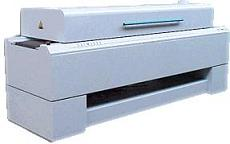

Solder Heat
Resistance Test
Solder
Heat Resistance Test (SHRT),
as the name implies, is a reliability test for assessing the ability of
a device to withstand the
thermal
stresses of the
soldering
process. It is also sometimes referred to as 'preconditioning' if
it precedes another reliability test.
Preconditioning
is usually done for surface-mount devices prior to PCT, THB, and HAST,
all of which accelerate corrosion if the package cracks after
preconditioning. Preconditioning may also be done prior to
temperature cycling or thermal shock, both of which aggravate incipient
mechanical failures induced by the precondition. In effect,
preconditioning
simulates
the
board soldering
process while the tests following it simulates the stresses that the
device will experience after mounting.
Solder Heat
Resistance Testing consists of three steps: 1) a
bake
to drive away all the moisture within the samples; 2) a
temperature/humidity soak
to drive controlled amounts of moisture into the package; and 3) a form
of
thermal shock
simulating the soldering process itself.
Popcorn
cracking,
which is package cracking resulting from internal vapor pressure from
within the package during soldering, is the primary failure mechanism
accelerated by SHRT.
If the package
delaminates internally during SHRT, neck breaking and
ball lifting may also be accelerated. Die cracking may also result
from SHRT. Lastly, because SHRT involves a step that promotes
moisture ingress into the package, moisture-related failure mechanisms
may also arise after SHRT, but these should generally not be considered
as valid SHRT failures.
Baking
is usually done for
24 hours
at
125 deg C
or 8 hours at 150 deg C.
Soaking
is usually done at
85 deg C/85% RH
or 30 deg
C/60%RH, for a duration ranging from 24 hours to 192 hours, depending on
the moisture sensitivity of the package.
The thermal
shock may be provided by a
vapor
cloud,
infrared (IR) heating,
convection heating, or a
combination of IR and convection heating.
The profile of the thermal shock consists of a temperature ramp of about
2-4 degrees per second to a peak temperature of 220-260 deg C. The
shock is often done three times, and should be completed within 4 hours
after the soak. Visual
inspection and electrical testing are the tests for success or failure
after SHRT.

Fig.
1.
Example of an
IR Reflow Oven; note the long conveyor belt
that
transports the samples through the required temperature profile
See Also:
Reliability
Engineering;
Reliability Modeling;
Qualification
Process; Failure
Analysis;
Package Failures; Die
Failures
HOME
Copyright
©
2001-2006
www.EESemi.com.
All Rights Reserved.